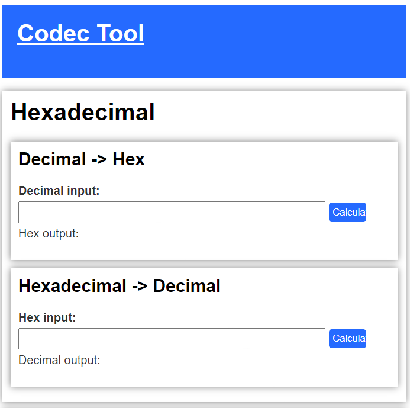
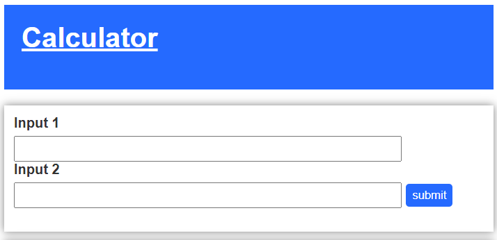

A simple tool able to calculate basic mathematical functions and on the other side able to code and decode different coding systems from hexadecimals to binary and much more.

The codec part of this project is mainly focused on coding and decoding or encrypting and decripting with simple and famous methods, Some of the used methods are usefull for resistancy while others are for their simplicity.
Decimals and hexadecimals:
This function is able to calculate the hexadecimal number from a decimal input and also is able to calculate it the other way around.
Decimals and binary:
This function is able to calculate the binary value of a number and also the other way around.
Hamming code:
This function is able to generate Hamming code wich is a system that makes data more resistant against errors, at the moment the decoding function doesnt correct 1 bit errors yet but this is a point for future improvement.
Ceasar cipher:
The Caesar cipher is a basic encryption technique where each letter in a message is shifted a certain number of positions in the alphabet. For example, with a shift of 3, 'A' becomes 'D', 'B' becomes 'E', and so on. It's a simple way to hide the meaning of a message, but it's easy to decrypt since there are only 25 possible shift values. It's more of a learning tool than a secure encryption method. A possible function for future imrpovements of this tool could be a Ceasar cipher cracker.

This calculator is made for calculating basic mathematical functions. You can make 2 inputs wich then calculate the output for each mathematical function with JavaScript, at the moment this calculator includes Following functions:
-Addition
-Subtraction
-Division
-Multiplication
You want to analyze the code and help improve the project? Or do you just wonder how the system works? Take a look the GitHub repository and click the button below.
CLICK HERE!